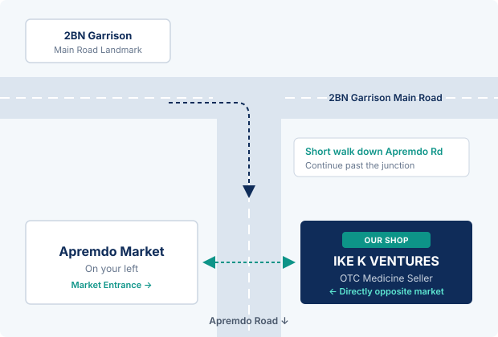

Your everyday medicine counter, directly opposite Apremdo Market.
IKE K VENTURES is a local over-the-counter medicine shop serving Apremdo residents, market traders, and families around the 2BN Garrison area. Walk in for reliable everyday health essentials without travelling into town.
PHOTOGRAPH SLOT
IKE K VENTURES Storefront & Counter
Drop your real shop photo into assets/images/ and link it here.
How to locate the counter from the main road
-
STEP 01
2BN Garrison Main Road
Start along the main road by the 2BN Garrison barracks in Takoradi.
-
STEP 02
Branch onto Apremdo Road
Take the junction turning off the main road onto Apremdo Road and continue a short walking distance down the road.
-
STEP 03
Opposite Apremdo Market
As you reach Apremdo Market on your left, look directly across the road to your right — IKE K VENTURES is right opposite the market.
IKE K VENTURES is an over-the-counter (OTC) medicine seller located on Apremdo Road, directly opposite Apremdo Market and a short distance from the 2BN Garrison main road junction in Takoradi.
We serve residents, market traders, and passers-by who need practical, everyday non-prescription medicines and first-aid supplies close to home. Our focus is keeping a clean, organised counter where you can walk up, ask for the over-the-counter item you need, and get back to your day.
We operate strictly as an in-person OTC medicine seller. We do not run an online store, we do not offer medical diagnosis, and we do not dispense prescription-only drugs. For persistent symptoms or medical emergencies, we always advise visiting a hospital or clinic.
- REGISTERED NAME
- IKE K VENTURES
- CATEGORY
- Over-The-Counter (OTC) Medicine Seller
- EXACT POSITION
- Directly opposite Apremdo Market, Apremdo Road (off 2BN Main Road)
- CITY / REGION
- Takoradi, Western Region, Ghana
- SERVICE MODE
- Walk-in Counter & Telephone Inquiry
-
CAT / 01
Pain, Headache & Fever Relief
Standard over-the-counter analgesics, paracetamol, body pain tablets, and fever-reducing syrups for adults and children.
-
CAT / 02
Cough, Cold & Flu Care
Cough mixtures, throat lozenges, nasal decongestants, and common cold or allergy relief preparations.
-
CAT / 03
Stomach, Digestion & ORS
Oral Rehydration Salts (ORS), antacids for heartburn or indigestion, routine dewormers, and basic stomach relief.
-
CAT / 04
First Aid & Wound Dressings
Plasters, bandages, gauze, cotton wool, methylated spirit, antiseptic liquids, and topical first-aid ointments.
-
CAT / 05
Vitamins, Blood Tonics & Supplements
Daily multivitamins, iron and blood tonics, Vitamin C, folic acid, and general nutritional supplements.
-
CAT / 06
Malaria Rapid Care & Hygiene Essentials
Approved over-the-counter malaria essentials, mosquito repellents, and everyday personal care items.
IKE K VENTURES supplies over-the-counter (OTC) medicines only. Nothing on this website is medical advice or a product catalogue. Always read package leaflets carefully and consult a doctor or pharmacist if symptoms persist.
